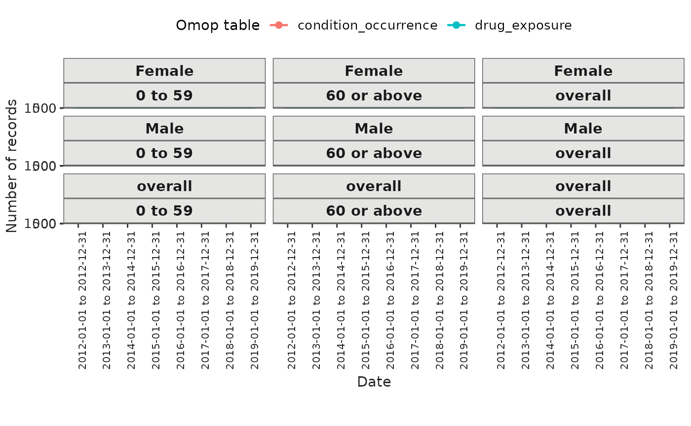
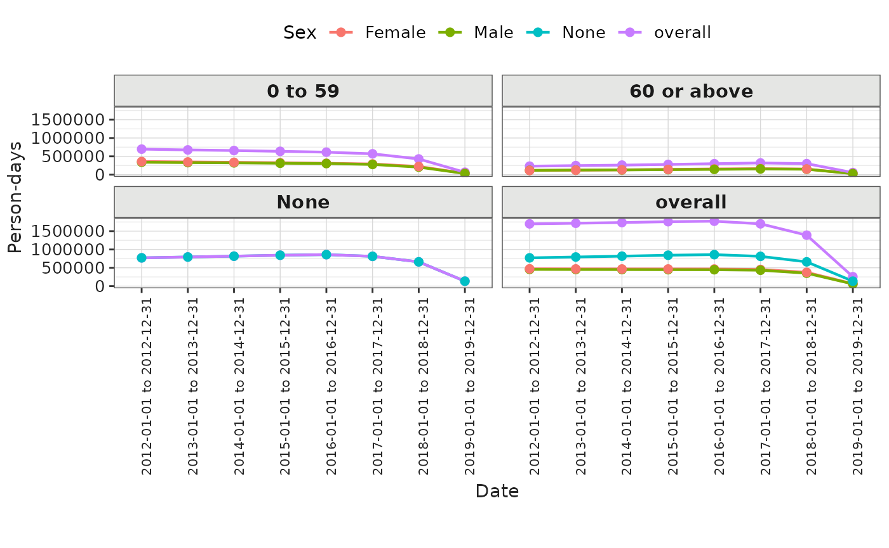
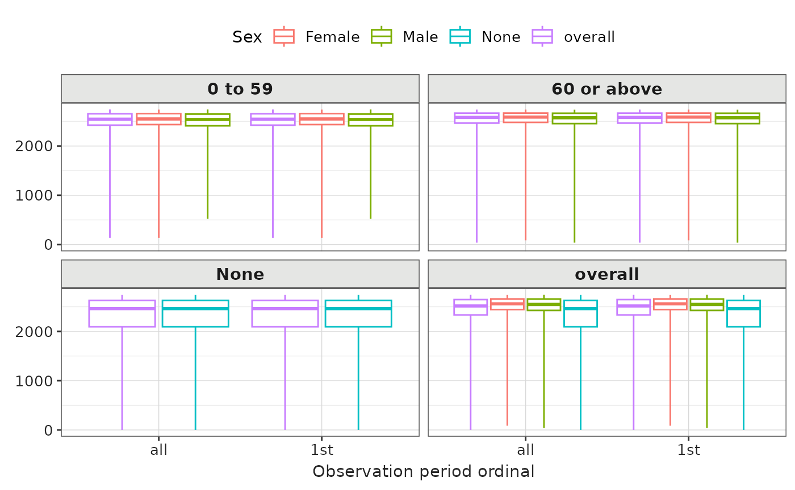

Introduction
In this vignette, we explore how OmopSketch functions can serve as a valuable tool for characterising databases containing electronic health records mapped to the OMOP Common Data Model.
Create a mock cdm
Let’s see an example of its functionalities. To start with, we will load essential packages and create a mock cdm using the mockOmopSketch() database.
library(dplyr)
#>
#> Attaching package: 'dplyr'
#> The following objects are masked from 'package:stats':
#>
#> filter, lag
#> The following objects are masked from 'package:base':
#>
#> intersect, setdiff, setequal, union
library(DBI)
library(duckdb)
library(OmopSketch)
# Connect to Eunomia database
con <- DBI::dbConnect(duckdb::duckdb(), CDMConnector::eunomiaDir())
cdm <- CDMConnector::cdmFromCon(
con = con, cdmSchema = "main", writeSchema = "main", cdmName = "Eunomia"
)
cdm
#>
#> ── # OMOP CDM reference (duckdb) of Eunomia ────────────────────────────────────
#> • omop tables: person, observation_period, visit_occurrence, visit_detail,
#> condition_occurrence, drug_exposure, procedure_occurrence, device_exposure,
#> measurement, observation, death, note, note_nlp, specimen, fact_relationship,
#> location, care_site, provider, payer_plan_period, cost, drug_era, dose_era,
#> condition_era, metadata, cdm_source, concept, vocabulary, domain,
#> concept_class, concept_relationship, relationship, concept_synonym,
#> concept_ancestor, source_to_concept_map, drug_strength
#> • cohort tables: -
#> • achilles tables: -
#> • other tables: -Snapshot
Let’s start by using the summariseOmopSnapshot()
function to summarise the available metadata of the cdm_reference
object, including the vocabulary version and the time span covered by
the observation_period table
snapshot <- summariseOmopSnapshot(cdm)
snapshot |>
tableOmopSnapshot()| Estimate |
Database name
|
|---|---|
| Eunomia | |
| General | |
| Snapshot date | 2025-03-15 |
| Person count | 2,694 |
| Vocabulary version | v5.0 18-JAN-19 |
| Observation period | |
| N | 5,343 |
| Start date | 1908-09-22 |
| End date | 2019-07-03 |
| Cdm | |
| Source name | Synthea synthetic health database |
| Version | v5.3.1 |
| Holder name | OHDSI Community |
| Release date | 2019-05-25 |
| Description | SyntheaTM is a Synthetic Patient Population Simulator. The goal is to output synthetic, realistic (but not real), patient data and associated health records in a variety of formats. |
| Documentation reference | https://synthetichealth.github.io/synthea/ |
| Source type | duckdb |
Clinical tables characterisation
Next, we define the tables of interest, specify the study period, and determine whether to stratify the analysis by sex, age groups, or time intervals.
tableName <- c("observation_period", "visit_occurrence", "condition_occurrence", "drug_exposure", "procedure_occurrence",
"device_exposure", "measurement" , "observation", "death")
dateRange <- as.Date(c("2012-01-01", NA))
sex <- TRUE
ageGroup <- list(c(0, 59), c(60, Inf))
interval <- "years"Missing values
We can now use the summariseMissingData() function to
assess the presence of missing values in the tables.
result_missingData <- summariseMissingData(cdm,
omopTableName = tableName,
sex = sex,
ageGroup = ageGroup,
interval = interval,
dateRange = dateRange)
result_missingData |> glimpse()
#> Rows: 17,292
#> Columns: 13
#> $ result_id <int> 1, 1, 1, 1, 1, 1, 1, 1, 1, 1, 1, 1, 1, 1, 1, 1, 1, 1,…
#> $ cdm_name <chr> "Eunomia", "Eunomia", "Eunomia", "Eunomia", "Eunomia"…
#> $ group_name <chr> "omop_table", "omop_table", "omop_table", "omop_table…
#> $ group_level <chr> "observation_period", "observation_period", "observat…
#> $ strata_name <chr> "overall", "overall", "overall", "overall", "overall"…
#> $ strata_level <chr> "overall", "overall", "overall", "overall", "overall"…
#> $ variable_name <chr> "observation_period_id", "observation_period_id", "pe…
#> $ variable_level <chr> NA, NA, NA, NA, NA, NA, NA, NA, NA, NA, NA, NA, NA, N…
#> $ estimate_name <chr> "na_count", "na_percentage", "na_count", "na_percenta…
#> $ estimate_type <chr> "integer", "percentage", "integer", "percentage", "in…
#> $ estimate_value <chr> "NA", "NA", "NA", "NA", "NA", "NA", "NA", "NA", "NA",…
#> $ additional_name <chr> "overall", "overall", "overall", "overall", "overall"…
#> $ additional_level <chr> "overall", "overall", "overall", "overall", "overall"…Clinical tables overview
The function sumamriseClinicalRecords() provides key
insights into the clinical tables content, including the number of
records, number of subjects, portion of records in observation, and the
number of distinct domains and concepts.
result_clinicalRecords <- summariseClinicalRecords(cdm,
omopTableName = tableName,
sex = sex,
ageGroup = ageGroup,
dateRange = dateRange)
#> ℹ Adding variables of interest to observation_period.
#> ℹ Summarising records per person in observation_period.
#> ℹ Summarising observation_period: `in_observation` and `type_concept`.
#> ℹ Adding variables of interest to visit_occurrence.
#> ℹ Summarising records per person in visit_occurrence.
#> ℹ Summarising visit_occurrence: `in_observation`, `standard_concept`,
#> `source_vocabulary`, `domain_id`, and `type_concept`.
#> ℹ Adding variables of interest to condition_occurrence.
#> ℹ Summarising records per person in condition_occurrence.
#> ℹ Summarising condition_occurrence: `in_observation`, `standard_concept`,
#> `source_vocabulary`, `domain_id`, and `type_concept`.
#> ℹ Adding variables of interest to drug_exposure.
#> ℹ Summarising records per person in drug_exposure.
#> ℹ Summarising drug_exposure: `in_observation`, `standard_concept`,
#> `source_vocabulary`, `domain_id`, and `type_concept`.
#> ℹ Adding variables of interest to procedure_occurrence.
#> ℹ Summarising records per person in procedure_occurrence.
#> ℹ Summarising procedure_occurrence: `in_observation`, `standard_concept`,
#> `source_vocabulary`, `domain_id`, and `type_concept`.
#> ℹ Adding variables of interest to measurement.
#> ℹ Summarising records per person in measurement.
#> ℹ Summarising measurement: `in_observation`, `standard_concept`,
#> `source_vocabulary`, `domain_id`, and `type_concept`.
#> ℹ Adding variables of interest to observation.
#> ℹ Summarising records per person in observation.
#> ℹ Summarising observation: `in_observation`, `standard_concept`,
#> `source_vocabulary`, `domain_id`, and `type_concept`.
result_clinicalRecords |> tableClinicalRecords()| Variable name | Variable level | Estimate name |
Database name
|
|---|---|---|---|
| Eunomia | |||
| condition_occurrence; overall; overall | |||
| In observation | No | N (%) | 445 (6.15%) |
| Yes | N (%) | 6,789 (93.85%) | |
| Number records | - | N | 7,234.00 |
| Number subjects | - | N (%) | 2,372 (88.05%) |
| Records per person | - | Mean (SD) | 2.69 (1.89) |
| max | 12.00 | ||
| median | 2.00 | ||
| min | 0.00 | ||
| q25 | 1.00 | ||
| q75 | 4.00 | ||
| Source vocabulary | Icd10cm | N (%) | 89 (1.23%) |
| No matching concept | N (%) | 4 (0.06%) | |
| Snomed | N (%) | 7,141 (98.71%) | |
| Standard concept | S | N (%) | 7,234 (100.00%) |
| Type concept id | Ehr encounter diagnosis | N (%) | 7,234 (100.00%) |
| condition_occurrence; 0 to 59; overall | |||
| In observation | No | N (%) | 318 (6.41%) |
| Yes | N (%) | 4,642 (93.59%) | |
| Number records | - | N | 4,960.00 |
| Number subjects | - | N (%) | 1,643 (60.99%) |
| Records per person | - | Mean (SD) | 1.84 (2.04) |
| max | 12.00 | ||
| median | 1.00 | ||
| min | 0.00 | ||
| q25 | 0.00 | ||
| q75 | 3.00 | ||
| Source vocabulary | Icd10cm | N (%) | 89 (1.79%) |
| No matching concept | N (%) | 2 (0.04%) | |
| Snomed | N (%) | 4,869 (98.17%) | |
| Standard concept | S | N (%) | 4,960 (100.00%) |
| Type concept id | Ehr encounter diagnosis | N (%) | 4,960 (100.00%) |
| condition_occurrence; 60 or above; overall | |||
| In observation | No | N (%) | 127 (5.58%) |
| Yes | N (%) | 2,147 (94.42%) | |
| Number records | - | N | 2,274.00 |
| Number subjects | - | N (%) | 880 (76.59%) |
| Records per person | - | Mean (SD) | 1.98 (1.72) |
| max | 9.00 | ||
| median | 2.00 | ||
| min | 0.00 | ||
| q25 | 1.00 | ||
| q75 | 3.00 | ||
| Source vocabulary | No matching concept | N (%) | 2 (0.09%) |
| Snomed | N (%) | 2,272 (99.91%) | |
| Standard concept | S | N (%) | 2,274 (100.00%) |
| Type concept id | Ehr encounter diagnosis | N (%) | 2,274 (100.00%) |
| condition_occurrence; overall; Female | |||
| In observation | No | N (%) | 224 (6.03%) |
| Yes | N (%) | 3,488 (93.97%) | |
| Number records | - | N | 3,712.00 |
| Number subjects | - | N (%) | 1,203 (87.62%) |
| Records per person | - | Mean (SD) | 2.70 (1.88) |
| max | 10.00 | ||
| median | 3.00 | ||
| min | 0.00 | ||
| q25 | 1.00 | ||
| q75 | 4.00 | ||
| Source vocabulary | Icd10cm | N (%) | 42 (1.13%) |
| No matching concept | N (%) | 1 (0.03%) | |
| Snomed | N (%) | 3,669 (98.84%) | |
| Standard concept | S | N (%) | 3,712 (100.00%) |
| Type concept id | Ehr encounter diagnosis | N (%) | 3,712 (100.00%) |
| condition_occurrence; overall; Male | |||
| In observation | No | N (%) | 221 (6.27%) |
| Yes | N (%) | 3,301 (93.73%) | |
| Number records | - | N | 3,522.00 |
| Number subjects | - | N (%) | 1,169 (88.49%) |
| Records per person | - | Mean (SD) | 2.67 (1.90) |
| max | 12.00 | ||
| median | 2.00 | ||
| min | 0.00 | ||
| q25 | 1.00 | ||
| q75 | 4.00 | ||
| Source vocabulary | Icd10cm | N (%) | 47 (1.33%) |
| No matching concept | N (%) | 3 (0.09%) | |
| Snomed | N (%) | 3,472 (98.58%) | |
| Standard concept | S | N (%) | 3,522 (100.00%) |
| Type concept id | Ehr encounter diagnosis | N (%) | 3,522 (100.00%) |
| condition_occurrence; 0 to 59; Female | |||
| In observation | No | N (%) | 160 (6.23%) |
| Yes | N (%) | 2,409 (93.77%) | |
| Number records | - | N | 2,569.00 |
| Number subjects | - | N (%) | 843 (61.40%) |
| Records per person | - | Mean (SD) | 1.87 (2.02) |
| max | 10.00 | ||
| median | 1.00 | ||
| min | 0.00 | ||
| q25 | 0.00 | ||
| q75 | 3.00 | ||
| Source vocabulary | Icd10cm | N (%) | 42 (1.63%) |
| Snomed | N (%) | 2,527 (98.37%) | |
| Standard concept | S | N (%) | 2,569 (100.00%) |
| Type concept id | Ehr encounter diagnosis | N (%) | 2,569 (100.00%) |
| condition_occurrence; 0 to 59; Male | |||
| In observation | No | N (%) | 158 (6.61%) |
| Yes | N (%) | 2,233 (93.39%) | |
| Number records | - | N | 2,391.00 |
| Number subjects | - | N (%) | 800 (60.56%) |
| Records per person | - | Mean (SD) | 1.81 (2.05) |
| max | 12.00 | ||
| median | 1.00 | ||
| min | 0.00 | ||
| q25 | 0.00 | ||
| q75 | 3.00 | ||
| Source vocabulary | Icd10cm | N (%) | 47 (1.97%) |
| No matching concept | N (%) | 2 (0.08%) | |
| Snomed | N (%) | 2,342 (97.95%) | |
| Standard concept | S | N (%) | 2,391 (100.00%) |
| Type concept id | Ehr encounter diagnosis | N (%) | 2,391 (100.00%) |
| condition_occurrence; 60 or above; Female | |||
| In observation | No | N (%) | 64 (5.60%) |
| Yes | N (%) | 1,079 (94.40%) | |
| Number records | - | N | 1,143.00 |
| Number subjects | - | N (%) | 436 (75.30%) |
| Records per person | - | Mean (SD) | 1.97 (1.76) |
| max | 9.00 | ||
| median | 2.00 | ||
| min | 0.00 | ||
| q25 | 1.00 | ||
| q75 | 3.00 | ||
| Source vocabulary | No matching concept | N (%) | 1 (0.09%) |
| Snomed | N (%) | 1,142 (99.91%) | |
| Standard concept | S | N (%) | 1,143 (100.00%) |
| Type concept id | Ehr encounter diagnosis | N (%) | 1,143 (100.00%) |
| condition_occurrence; 60 or above; Male | |||
| In observation | No | N (%) | 63 (5.57%) |
| Yes | N (%) | 1,068 (94.43%) | |
| Number records | - | N | 1,131.00 |
| Number subjects | - | N (%) | 444 (77.89%) |
| Records per person | - | Mean (SD) | 1.98 (1.67) |
| max | 9.00 | ||
| median | 2.00 | ||
| min | 0.00 | ||
| q25 | 1.00 | ||
| q75 | 3.00 | ||
| Source vocabulary | No matching concept | N (%) | 1 (0.09%) |
| Snomed | N (%) | 1,130 (99.91%) | |
| Standard concept | S | N (%) | 1,131 (100.00%) |
| Type concept id | Ehr encounter diagnosis | N (%) | 1,131 (100.00%) |
| drug_exposure; overall; overall | |||
| In observation | No | N (%) | 247 (2.78%) |
| Yes | N (%) | 8,652 (97.22%) | |
| Number records | - | N | 8,899.00 |
| Number subjects | - | N (%) | 2,446 (90.79%) |
| Records per person | - | Mean (SD) | 3.30 (2.03) |
| max | 16.00 | ||
| median | 3.00 | ||
| min | 0.00 | ||
| q25 | 2.00 | ||
| q75 | 4.00 | ||
| Source vocabulary | Cvx | N (%) | 4,475 (50.29%) |
| Ndc | N (%) | 495 (5.56%) | |
| No matching concept | N (%) | 4 (0.04%) | |
| Rxnorm | N (%) | 3,925 (44.11%) | |
| Standard concept | S | N (%) | 8,899 (100.00%) |
| Type concept id | Dispensed in outpatient office | N (%) | 4,475 (50.29%) |
| Prescription written | N (%) | 4,424 (49.71%) | |
| drug_exposure; 0 to 59; overall | |||
| In observation | No | N (%) | 186 (3.13%) |
| Yes | N (%) | 5,763 (96.87%) | |
| Number records | - | N | 5,949.00 |
| Number subjects | - | N (%) | 1,617 (60.02%) |
| Records per person | - | Mean (SD) | 2.21 (2.27) |
| max | 16.00 | ||
| median | 2.00 | ||
| min | 0.00 | ||
| q25 | 0.00 | ||
| q75 | 4.00 | ||
| Source vocabulary | Cvx | N (%) | 3,120 (52.45%) |
| Ndc | N (%) | 495 (8.32%) | |
| No matching concept | N (%) | 2 (0.03%) | |
| Rxnorm | N (%) | 2,332 (39.20%) | |
| Standard concept | S | N (%) | 5,949 (100.00%) |
| Type concept id | Dispensed in outpatient office | N (%) | 3,120 (52.45%) |
| Prescription written | N (%) | 2,829 (47.55%) | |
| drug_exposure; 60 or above; overall | |||
| In observation | No | N (%) | 61 (2.07%) |
| Yes | N (%) | 2,889 (97.93%) | |
| Number records | - | N | 2,950.00 |
| Number subjects | - | N (%) | 955 (83.12%) |
| Records per person | - | Mean (SD) | 2.57 (2.10) |
| max | 14.00 | ||
| median | 2.00 | ||
| min | 0.00 | ||
| q25 | 1.00 | ||
| q75 | 4.00 | ||
| Source vocabulary | Cvx | N (%) | 1,355 (45.93%) |
| No matching concept | N (%) | 2 (0.07%) | |
| Rxnorm | N (%) | 1,593 (54.00%) | |
| Standard concept | S | N (%) | 2,950 (100.00%) |
| Type concept id | Dispensed in outpatient office | N (%) | 1,355 (45.93%) |
| Prescription written | N (%) | 1,595 (54.07%) | |
| drug_exposure; overall; Female | |||
| In observation | No | N (%) | 121 (2.69%) |
| Yes | N (%) | 4,374 (97.31%) | |
| Number records | - | N | 4,495.00 |
| Number subjects | - | N (%) | 1,241 (90.39%) |
| Records per person | - | Mean (SD) | 3.27 (2.03) |
| max | 16.00 | ||
| median | 3.00 | ||
| min | 0.00 | ||
| q25 | 2.00 | ||
| q75 | 4.00 | ||
| Source vocabulary | Cvx | N (%) | 2,290 (50.95%) |
| Ndc | N (%) | 266 (5.92%) | |
| No matching concept | N (%) | 2 (0.04%) | |
| Rxnorm | N (%) | 1,937 (43.09%) | |
| Standard concept | S | N (%) | 4,495 (100.00%) |
| Type concept id | Dispensed in outpatient office | N (%) | 2,290 (50.95%) |
| Prescription written | N (%) | 2,205 (49.05%) | |
| drug_exposure; overall; Male | |||
| In observation | No | N (%) | 126 (2.86%) |
| Yes | N (%) | 4,278 (97.14%) | |
| Number records | - | N | 4,404.00 |
| Number subjects | - | N (%) | 1,205 (91.22%) |
| Records per person | - | Mean (SD) | 3.33 (2.03) |
| max | 14.00 | ||
| median | 3.00 | ||
| min | 0.00 | ||
| q25 | 2.00 | ||
| q75 | 5.00 | ||
| Source vocabulary | Cvx | N (%) | 2,185 (49.61%) |
| Ndc | N (%) | 229 (5.20%) | |
| No matching concept | N (%) | 2 (0.05%) | |
| Rxnorm | N (%) | 1,988 (45.14%) | |
| Standard concept | S | N (%) | 4,404 (100.00%) |
| Type concept id | Dispensed in outpatient office | N (%) | 2,185 (49.61%) |
| Prescription written | N (%) | 2,219 (50.39%) | |
| drug_exposure; 0 to 59; Female | |||
| In observation | No | N (%) | 93 (2.98%) |
| Yes | N (%) | 3,027 (97.02%) | |
| Number records | - | N | 3,120.00 |
| Number subjects | - | N (%) | 823 (59.94%) |
| Records per person | - | Mean (SD) | 2.27 (2.32) |
| max | 16.00 | ||
| median | 2.00 | ||
| min | 0.00 | ||
| q25 | 0.00 | ||
| q75 | 4.00 | ||
| Source vocabulary | Cvx | N (%) | 1,620 (51.92%) |
| Ndc | N (%) | 266 (8.53%) | |
| No matching concept | N (%) | 1 (0.03%) | |
| Rxnorm | N (%) | 1,233 (39.52%) | |
| Standard concept | S | N (%) | 3,120 (100.00%) |
| Type concept id | Dispensed in outpatient office | N (%) | 1,620 (51.92%) |
| Prescription written | N (%) | 1,500 (48.08%) | |
| drug_exposure; 0 to 59; Male | |||
| In observation | No | N (%) | 93 (3.29%) |
| Yes | N (%) | 2,736 (96.71%) | |
| Number records | - | N | 2,829.00 |
| Number subjects | - | N (%) | 794 (60.11%) |
| Records per person | - | Mean (SD) | 2.14 (2.22) |
| max | 12.00 | ||
| median | 2.00 | ||
| min | 0.00 | ||
| q25 | 0.00 | ||
| q75 | 4.00 | ||
| Source vocabulary | Cvx | N (%) | 1,500 (53.02%) |
| Ndc | N (%) | 229 (8.09%) | |
| No matching concept | N (%) | 1 (0.04%) | |
| Rxnorm | N (%) | 1,099 (38.85%) | |
| Standard concept | S | N (%) | 2,829 (100.00%) |
| Type concept id | Dispensed in outpatient office | N (%) | 1,500 (53.02%) |
| Prescription written | N (%) | 1,329 (46.98%) | |
| drug_exposure; 60 or above; Female | |||
| In observation | No | N (%) | 28 (2.04%) |
| Yes | N (%) | 1,347 (97.96%) | |
| Number records | - | N | 1,375.00 |
| Number subjects | - | N (%) | 476 (82.21%) |
| Records per person | - | Mean (SD) | 2.37 (1.98) |
| max | 14.00 | ||
| median | 2.00 | ||
| min | 0.00 | ||
| q25 | 1.00 | ||
| q75 | 4.00 | ||
| Source vocabulary | Cvx | N (%) | 670 (48.73%) |
| No matching concept | N (%) | 1 (0.07%) | |
| Rxnorm | N (%) | 704 (51.20%) | |
| Standard concept | S | N (%) | 1,375 (100.00%) |
| Type concept id | Dispensed in outpatient office | N (%) | 670 (48.73%) |
| Prescription written | N (%) | 705 (51.27%) | |
| drug_exposure; 60 or above; Male | |||
| In observation | No | N (%) | 33 (2.10%) |
| Yes | N (%) | 1,542 (97.90%) | |
| Number records | - | N | 1,575.00 |
| Number subjects | - | N (%) | 479 (84.04%) |
| Records per person | - | Mean (SD) | 2.76 (2.20) |
| max | 13.00 | ||
| median | 2.50 | ||
| min | 0.00 | ||
| q25 | 1.00 | ||
| q75 | 4.00 | ||
| Source vocabulary | Cvx | N (%) | 685 (43.49%) |
| No matching concept | N (%) | 1 (0.06%) | |
| Rxnorm | N (%) | 889 (56.44%) | |
| Standard concept | S | N (%) | 1,575 (100.00%) |
| Type concept id | Dispensed in outpatient office | N (%) | 685 (43.49%) |
| Prescription written | N (%) | 890 (56.51%) | |
| procedure_occurrence; overall; overall | |||
| In observation | No | N (%) | 6 (0.21%) |
| Yes | N (%) | 2,801 (99.79%) | |
| Number records | - | N | 2,807.00 |
| Number subjects | - | N (%) | 969 (35.97%) |
| Records per person | - | Mean (SD) | 1.04 (2.53) |
| max | 58.00 | ||
| median | 0.00 | ||
| min | 0.00 | ||
| q25 | 0.00 | ||
| q75 | 1.00 | ||
| Source vocabulary | Snomed | N (%) | 2,807 (100.00%) |
| Standard concept | S | N (%) | 2,807 (100.00%) |
| Type concept id | Ehr order list entry | N (%) | 2,807 (100.00%) |
| procedure_occurrence; 0 to 59; overall | |||
| In observation | No | N (%) | 2 (0.17%) |
| Yes | N (%) | 1,160 (99.83%) | |
| Number records | - | N | 1,162.00 |
| Number subjects | - | N (%) | 543 (20.16%) |
| Records per person | - | Mean (SD) | 0.43 (1.78) |
| max | 58.00 | ||
| median | 0.00 | ||
| min | 0.00 | ||
| q25 | 0.00 | ||
| q75 | 0.00 | ||
| Source vocabulary | Snomed | N (%) | 1,162 (100.00%) |
| Standard concept | S | N (%) | 1,162 (100.00%) |
| Type concept id | Ehr order list entry | N (%) | 1,162 (100.00%) |
| procedure_occurrence; 60 or above; overall | |||
| In observation | No | N (%) | 4 (0.24%) |
| Yes | N (%) | 1,641 (99.76%) | |
| Number records | - | N | 1,645.00 |
| Number subjects | - | N (%) | 460 (40.03%) |
| Records per person | - | Mean (SD) | 1.43 (2.66) |
| max | 17.00 | ||
| median | 0.00 | ||
| min | 0.00 | ||
| q25 | 0.00 | ||
| q75 | 2.00 | ||
| Source vocabulary | Snomed | N (%) | 1,645 (100.00%) |
| Standard concept | S | N (%) | 1,645 (100.00%) |
| Type concept id | Ehr order list entry | N (%) | 1,645 (100.00%) |
| procedure_occurrence; overall; Female | |||
| In observation | No | N (%) | 2 (0.15%) |
| Yes | N (%) | 1,375 (99.85%) | |
| Number records | - | N | 1,377.00 |
| Number subjects | - | N (%) | 476 (34.67%) |
| Records per person | - | Mean (SD) | 1.00 (2.32) |
| max | 37.00 | ||
| median | 0.00 | ||
| min | 0.00 | ||
| q25 | 0.00 | ||
| q75 | 1.00 | ||
| Source vocabulary | Snomed | N (%) | 1,377 (100.00%) |
| Standard concept | S | N (%) | 1,377 (100.00%) |
| Type concept id | Ehr order list entry | N (%) | 1,377 (100.00%) |
| procedure_occurrence; overall; Male | |||
| In observation | No | N (%) | 4 (0.28%) |
| Yes | N (%) | 1,426 (99.72%) | |
| Number records | - | N | 1,430.00 |
| Number subjects | - | N (%) | 493 (37.32%) |
| Records per person | - | Mean (SD) | 1.08 (2.72) |
| max | 58.00 | ||
| median | 0.00 | ||
| min | 0.00 | ||
| q25 | 0.00 | ||
| q75 | 1.00 | ||
| Source vocabulary | Snomed | N (%) | 1,430 (100.00%) |
| Standard concept | S | N (%) | 1,430 (100.00%) |
| Type concept id | Ehr order list entry | N (%) | 1,430 (100.00%) |
| procedure_occurrence; 0 to 59; Male | |||
| In observation | No | N (%) | 2 (0.34%) |
| Yes | N (%) | 580 (99.66%) | |
| Number records | - | N | 582.00 |
| Number subjects | - | N (%) | 275 (20.82%) |
| Records per person | - | Mean (SD) | 0.44 (2.00) |
| max | 58.00 | ||
| median | 0.00 | ||
| min | 0.00 | ||
| q25 | 0.00 | ||
| q75 | 0.00 | ||
| Source vocabulary | Snomed | N (%) | 582 (100.00%) |
| Standard concept | S | N (%) | 582 (100.00%) |
| Type concept id | Ehr order list entry | N (%) | 582 (100.00%) |
| procedure_occurrence; 60 or above; Female | |||
| In observation | No | N (%) | 2 (0.25%) |
| Yes | N (%) | 795 (99.75%) | |
| Number records | - | N | 797.00 |
| Number subjects | - | N (%) | 225 (38.86%) |
| Records per person | - | Mean (SD) | 1.38 (2.58) |
| max | 16.00 | ||
| median | 0.00 | ||
| min | 0.00 | ||
| q25 | 0.00 | ||
| q75 | 2.00 | ||
| Source vocabulary | Snomed | N (%) | 797 (100.00%) |
| Standard concept | S | N (%) | 797 (100.00%) |
| Type concept id | Ehr order list entry | N (%) | 797 (100.00%) |
| procedure_occurrence; 60 or above; Male | |||
| In observation | No | N (%) | 2 (0.24%) |
| Yes | N (%) | 846 (99.76%) | |
| Number records | - | N | 848.00 |
| Number subjects | - | N (%) | 235 (41.23%) |
| Records per person | - | Mean (SD) | 1.49 (2.74) |
| max | 17.00 | ||
| median | 0.00 | ||
| min | 0.00 | ||
| q25 | 0.00 | ||
| q75 | 2.00 | ||
| Source vocabulary | Snomed | N (%) | 848 (100.00%) |
| Standard concept | S | N (%) | 848 (100.00%) |
| Type concept id | Ehr order list entry | N (%) | 848 (100.00%) |
| visit_occurrence; overall; overall | |||
| In observation | Yes | N (%) | 163 (100.00%) |
| Number records | - | N | 163.00 |
| Number subjects | - | N (%) | 160 (5.94%) |
| Records per person | - | Mean (SD) | 0.06 (0.24) |
| max | 2.00 | ||
| median | 0.00 | ||
| min | 0.00 | ||
| q25 | 0.00 | ||
| q75 | 0.00 | ||
| Source vocabulary | None | N (%) | 163 (100.00%) |
| Standard concept | S | N (%) | 163 (100.00%) |
| Type concept id | Visit derived from encounter on claim | N (%) | 163 (100.00%) |
| visit_occurrence; 0 to 59; overall | |||
| In observation | Yes | N (%) | 131 (100.00%) |
| Number records | - | N | 131.00 |
| Number subjects | - | N (%) | 130 (4.83%) |
| Records per person | - | Mean (SD) | 0.05 (0.22) |
| max | 2.00 | ||
| median | 0.00 | ||
| min | 0.00 | ||
| q25 | 0.00 | ||
| q75 | 0.00 | ||
| Source vocabulary | None | N (%) | 131 (100.00%) |
| Standard concept | S | N (%) | 131 (100.00%) |
| Type concept id | Visit derived from encounter on claim | N (%) | 131 (100.00%) |
| visit_occurrence; 60 or above; overall | |||
| In observation | Yes | N (%) | 32 (100.00%) |
| Number records | - | N | 32.00 |
| Number subjects | - | N (%) | 30 (2.61%) |
| Records per person | - | Mean (SD) | 0.03 (0.17) |
| max | 2.00 | ||
| median | 0.00 | ||
| min | 0.00 | ||
| q25 | 0.00 | ||
| q75 | 0.00 | ||
| Source vocabulary | None | N (%) | 32 (100.00%) |
| Standard concept | S | N (%) | 32 (100.00%) |
| Type concept id | Visit derived from encounter on claim | N (%) | 32 (100.00%) |
| visit_occurrence; overall; Female | |||
| In observation | Yes | N (%) | 85 (100.00%) |
| Number records | - | N | 85.00 |
| Number subjects | - | N (%) | 83 (6.05%) |
| Records per person | - | Mean (SD) | 0.06 (0.25) |
| max | 2.00 | ||
| median | 0.00 | ||
| min | 0.00 | ||
| q25 | 0.00 | ||
| q75 | 0.00 | ||
| Source vocabulary | None | N (%) | 85 (100.00%) |
| Standard concept | S | N (%) | 85 (100.00%) |
| Type concept id | Visit derived from encounter on claim | N (%) | 85 (100.00%) |
| visit_occurrence; overall; Male | |||
| In observation | Yes | N (%) | 78 (100.00%) |
| Number records | - | N | 78.00 |
| Number subjects | - | N (%) | 77 (5.83%) |
| Records per person | - | Mean (SD) | 0.06 (0.24) |
| max | 2.00 | ||
| median | 0.00 | ||
| min | 0.00 | ||
| q25 | 0.00 | ||
| q75 | 0.00 | ||
| Source vocabulary | None | N (%) | 78 (100.00%) |
| Standard concept | S | N (%) | 78 (100.00%) |
| Type concept id | Visit derived from encounter on claim | N (%) | 78 (100.00%) |
| visit_occurrence; 0 to 59; Female | |||
| In observation | Yes | N (%) | 67 (100.00%) |
| Number records | - | N | 67.00 |
| Number subjects | - | N (%) | 66 (4.81%) |
| Records per person | - | Mean (SD) | 0.05 (0.22) |
| max | 2.00 | ||
| median | 0.00 | ||
| min | 0.00 | ||
| q25 | 0.00 | ||
| q75 | 0.00 | ||
| Source vocabulary | None | N (%) | 67 (100.00%) |
| Standard concept | S | N (%) | 67 (100.00%) |
| Type concept id | Visit derived from encounter on claim | N (%) | 67 (100.00%) |
| visit_occurrence; 0 to 59; Male | |||
| In observation | Yes | N (%) | 64 (100.00%) |
| Number records | - | N | 64.00 |
| Number subjects | - | N (%) | 64 (4.84%) |
| Records per person | - | Mean (SD) | 0.05 (0.21) |
| max | 1.00 | ||
| median | 0.00 | ||
| min | 0.00 | ||
| q25 | 0.00 | ||
| q75 | 0.00 | ||
| Source vocabulary | None | N (%) | 64 (100.00%) |
| Standard concept | S | N (%) | 64 (100.00%) |
| Type concept id | Visit derived from encounter on claim | N (%) | 64 (100.00%) |
| visit_occurrence; 60 or above; Female | |||
| In observation | Yes | N (%) | 18 (100.00%) |
| Number records | - | N | 18.00 |
| Number subjects | - | N (%) | 17 (2.94%) |
| Records per person | - | Mean (SD) | 0.03 (0.18) |
| max | 2.00 | ||
| median | 0.00 | ||
| min | 0.00 | ||
| q25 | 0.00 | ||
| q75 | 0.00 | ||
| Source vocabulary | None | N (%) | 18 (100.00%) |
| Standard concept | S | N (%) | 18 (100.00%) |
| Type concept id | Visit derived from encounter on claim | N (%) | 18 (100.00%) |
| visit_occurrence; 60 or above; Male | |||
| In observation | Yes | N (%) | 14 (100.00%) |
| Number records | - | N | 14.00 |
| Number subjects | - | N (%) | 13 (2.28%) |
| Records per person | - | Mean (SD) | 0.02 (0.17) |
| max | 2.00 | ||
| median | 0.00 | ||
| min | 0.00 | ||
| q25 | 0.00 | ||
| q75 | 0.00 | ||
| Source vocabulary | None | N (%) | 14 (100.00%) |
| Standard concept | S | N (%) | 14 (100.00%) |
| Type concept id | Visit derived from encounter on claim | N (%) | 14 (100.00%) |
| procedure_occurrence; 0 to 59; Female | |||
| In observation | Yes | N (%) | 580 (100.00%) |
| Number records | - | N | 580.00 |
| Number subjects | - | N (%) | 268 (19.52%) |
| Records per person | - | Mean (SD) | 0.42 (1.55) |
| max | 37.00 | ||
| median | 0.00 | ||
| min | 0.00 | ||
| q25 | 0.00 | ||
| q75 | 0.00 | ||
| Source vocabulary | Snomed | N (%) | 580 (100.00%) |
| Standard concept | S | N (%) | 580 (100.00%) |
| Type concept id | Ehr order list entry | N (%) | 580 (100.00%) |
| measurement; overall; overall | |||
| In observation | Yes | N (%) | 4,335 (100.00%) |
| Number records | - | N | 4,335.00 |
| Number subjects | - | N (%) | 1,453 (53.93%) |
| Records per person | - | Mean (SD) | 1.61 (3.82) |
| max | 65.00 | ||
| median | 1.00 | ||
| min | 0.00 | ||
| q25 | 0.00 | ||
| q75 | 2.00 | ||
| Source vocabulary | Loinc | N (%) | 2,899 (66.87%) |
| Snomed | N (%) | 1,436 (33.13%) | |
| Standard concept | S | N (%) | 4,335 (100.00%) |
| Type concept id | Test ordered through ehr | N (%) | 4,335 (100.00%) |
| measurement; 0 to 59; overall | |||
| In observation | Yes | N (%) | 2,492 (100.00%) |
| Number records | - | N | 2,492.00 |
| Number subjects | - | N (%) | 941 (34.93%) |
| Records per person | - | Mean (SD) | 0.92 (2.61) |
| max | 52.00 | ||
| median | 0.00 | ||
| min | 0.00 | ||
| q25 | 0.00 | ||
| q75 | 1.00 | ||
| Source vocabulary | Loinc | N (%) | 1,623 (65.13%) |
| Snomed | N (%) | 869 (34.87%) | |
| Standard concept | S | N (%) | 2,492 (100.00%) |
| Type concept id | Test ordered through ehr | N (%) | 2,492 (100.00%) |
| measurement; 60 or above; overall | |||
| In observation | Yes | N (%) | 1,843 (100.00%) |
| Number records | - | N | 1,843.00 |
| Number subjects | - | N (%) | 567 (49.35%) |
| Records per person | - | Mean (SD) | 1.60 (4.06) |
| max | 63.00 | ||
| median | 0.00 | ||
| min | 0.00 | ||
| q25 | 0.00 | ||
| q75 | 1.00 | ||
| Source vocabulary | Loinc | N (%) | 1,276 (69.23%) |
| Snomed | N (%) | 567 (30.77%) | |
| Standard concept | S | N (%) | 1,843 (100.00%) |
| Type concept id | Test ordered through ehr | N (%) | 1,843 (100.00%) |
| measurement; overall; Female | |||
| In observation | Yes | N (%) | 2,352 (100.00%) |
| Number records | - | N | 2,352.00 |
| Number subjects | - | N (%) | 760 (55.35%) |
| Records per person | - | Mean (SD) | 1.71 (3.90) |
| max | 63.00 | ||
| median | 1.00 | ||
| min | 0.00 | ||
| q25 | 0.00 | ||
| q75 | 2.00 | ||
| Source vocabulary | Loinc | N (%) | 1,558 (66.24%) |
| Snomed | N (%) | 794 (33.76%) | |
| Standard concept | S | N (%) | 2,352 (100.00%) |
| Type concept id | Test ordered through ehr | N (%) | 2,352 (100.00%) |
| measurement; overall; Male | |||
| In observation | Yes | N (%) | 1,983 (100.00%) |
| Number records | - | N | 1,983.00 |
| Number subjects | - | N (%) | 693 (52.46%) |
| Records per person | - | Mean (SD) | 1.50 (3.74) |
| max | 65.00 | ||
| median | 1.00 | ||
| min | 0.00 | ||
| q25 | 0.00 | ||
| q75 | 2.00 | ||
| Source vocabulary | Loinc | N (%) | 1,341 (67.62%) |
| Snomed | N (%) | 642 (32.38%) | |
| Standard concept | S | N (%) | 1,983 (100.00%) |
| Type concept id | Test ordered through ehr | N (%) | 1,983 (100.00%) |
| measurement; 0 to 59; Female | |||
| In observation | Yes | N (%) | 1,323 (100.00%) |
| Number records | - | N | 1,323.00 |
| Number subjects | - | N (%) | 499 (36.34%) |
| Records per person | - | Mean (SD) | 0.96 (2.44) |
| max | 32.00 | ||
| median | 0.00 | ||
| min | 0.00 | ||
| q25 | 0.00 | ||
| q75 | 1.00 | ||
| Source vocabulary | Loinc | N (%) | 850 (64.25%) |
| Snomed | N (%) | 473 (35.75%) | |
| Standard concept | S | N (%) | 1,323 (100.00%) |
| Type concept id | Test ordered through ehr | N (%) | 1,323 (100.00%) |
| measurement; 0 to 59; Male | |||
| In observation | Yes | N (%) | 1,169 (100.00%) |
| Number records | - | N | 1,169.00 |
| Number subjects | - | N (%) | 442 (33.46%) |
| Records per person | - | Mean (SD) | 0.88 (2.77) |
| max | 52.00 | ||
| median | 0.00 | ||
| min | 0.00 | ||
| q25 | 0.00 | ||
| q75 | 1.00 | ||
| Source vocabulary | Loinc | N (%) | 773 (66.12%) |
| Snomed | N (%) | 396 (33.88%) | |
| Standard concept | S | N (%) | 1,169 (100.00%) |
| Type concept id | Test ordered through ehr | N (%) | 1,169 (100.00%) |
| measurement; 60 or above; Female | |||
| In observation | Yes | N (%) | 1,029 (100.00%) |
| Number records | - | N | 1,029.00 |
| Number subjects | - | N (%) | 294 (50.78%) |
| Records per person | - | Mean (SD) | 1.78 (4.59) |
| max | 63.00 | ||
| median | 1.00 | ||
| min | 0.00 | ||
| q25 | 0.00 | ||
| q75 | 2.00 | ||
| Source vocabulary | Loinc | N (%) | 708 (68.80%) |
| Snomed | N (%) | 321 (31.20%) | |
| Standard concept | S | N (%) | 1,029 (100.00%) |
| Type concept id | Test ordered through ehr | N (%) | 1,029 (100.00%) |
| measurement; 60 or above; Male | |||
| In observation | Yes | N (%) | 814 (100.00%) |
| Number records | - | N | 814.00 |
| Number subjects | - | N (%) | 273 (47.89%) |
| Records per person | - | Mean (SD) | 1.43 (3.45) |
| max | 36.00 | ||
| median | 0.00 | ||
| min | 0.00 | ||
| q25 | 0.00 | ||
| q75 | 1.00 | ||
| Source vocabulary | Loinc | N (%) | 568 (69.78%) |
| Snomed | N (%) | 246 (30.22%) | |
| Standard concept | S | N (%) | 814 (100.00%) |
| Type concept id | Test ordered through ehr | N (%) | 814 (100.00%) |
| observation; overall; overall | |||
| In observation | Yes | N (%) | 56 (100.00%) |
| Number records | - | N | 56.00 |
| Number subjects | - | N (%) | 55 (2.04%) |
| Records per person | - | Mean (SD) | 0.02 (0.15) |
| max | 2.00 | ||
| median | 0.00 | ||
| min | 0.00 | ||
| q25 | 0.00 | ||
| q75 | 0.00 | ||
| Source vocabulary | Snomed | N (%) | 56 (100.00%) |
| Standard concept | S | N (%) | 56 (100.00%) |
| Type concept id | Problem list from ehr | N (%) | 56 (100.00%) |
| observation; 0 to 59; overall | |||
| In observation | Yes | N (%) | 31 (100.00%) |
| Number records | - | N | 31.00 |
| Number subjects | - | N (%) | 31 (1.15%) |
| Records per person | - | Mean (SD) | 0.01 (0.11) |
| max | 1.00 | ||
| median | 0.00 | ||
| min | 0.00 | ||
| q25 | 0.00 | ||
| q75 | 0.00 | ||
| Source vocabulary | Snomed | N (%) | 31 (100.00%) |
| Standard concept | S | N (%) | 31 (100.00%) |
| Type concept id | Problem list from ehr | N (%) | 31 (100.00%) |
| observation; 60 or above; overall | |||
| In observation | Yes | N (%) | 25 (100.00%) |
| Number records | - | N | 25.00 |
| Number subjects | - | N (%) | 24 (2.09%) |
| Records per person | - | Mean (SD) | 0.02 (0.15) |
| max | 2.00 | ||
| median | 0.00 | ||
| min | 0.00 | ||
| q25 | 0.00 | ||
| q75 | 0.00 | ||
| Source vocabulary | Snomed | N (%) | 25 (100.00%) |
| Standard concept | S | N (%) | 25 (100.00%) |
| Type concept id | Problem list from ehr | N (%) | 25 (100.00%) |
| observation; overall; Female | |||
| In observation | Yes | N (%) | 21 (100.00%) |
| Number records | - | N | 21.00 |
| Number subjects | - | N (%) | 20 (1.46%) |
| Records per person | - | Mean (SD) | 0.02 (0.13) |
| max | 2.00 | ||
| median | 0.00 | ||
| min | 0.00 | ||
| q25 | 0.00 | ||
| q75 | 0.00 | ||
| Source vocabulary | Snomed | N (%) | 21 (100.00%) |
| Standard concept | S | N (%) | 21 (100.00%) |
| Type concept id | Problem list from ehr | N (%) | 21 (100.00%) |
| observation; overall; Male | |||
| In observation | Yes | N (%) | 35 (100.00%) |
| Number records | - | N | 35.00 |
| Number subjects | - | N (%) | 35 (2.65%) |
| Records per person | - | Mean (SD) | 0.03 (0.16) |
| max | 1.00 | ||
| median | 0.00 | ||
| min | 0.00 | ||
| q25 | 0.00 | ||
| q75 | 0.00 | ||
| Source vocabulary | Snomed | N (%) | 35 (100.00%) |
| Standard concept | S | N (%) | 35 (100.00%) |
| Type concept id | Problem list from ehr | N (%) | 35 (100.00%) |
| observation; 0 to 59; Female | |||
| In observation | Yes | N (%) | 12 (100.00%) |
| Number records | - | N | 12.00 |
| Number subjects | - | N (%) | 12 (0.87%) |
| Records per person | - | Mean (SD) | 0.01 (0.09) |
| max | 1.00 | ||
| median | 0.00 | ||
| min | 0.00 | ||
| q25 | 0.00 | ||
| q75 | 0.00 | ||
| Source vocabulary | Snomed | N (%) | 12 (100.00%) |
| Standard concept | S | N (%) | 12 (100.00%) |
| Type concept id | Problem list from ehr | N (%) | 12 (100.00%) |
| observation; 0 to 59; Male | |||
| In observation | Yes | N (%) | 19 (100.00%) |
| Number records | - | N | 19.00 |
| Number subjects | - | N (%) | 19 (1.44%) |
| Records per person | - | Mean (SD) | 0.01 (0.12) |
| max | 1.00 | ||
| median | 0.00 | ||
| min | 0.00 | ||
| q25 | 0.00 | ||
| q75 | 0.00 | ||
| Source vocabulary | Snomed | N (%) | 19 (100.00%) |
| Standard concept | S | N (%) | 19 (100.00%) |
| Type concept id | Problem list from ehr | N (%) | 19 (100.00%) |
| observation; 60 or above; Female | |||
| In observation | Yes | N (%) | 9 (100.00%) |
| Number records | - | N | 9.00 |
| Number subjects | - | N (%) | 8 (1.38%) |
| Records per person | - | Mean (SD) | 0.02 (0.14) |
| max | 2.00 | ||
| median | 0.00 | ||
| min | 0.00 | ||
| q25 | 0.00 | ||
| q75 | 0.00 | ||
| Source vocabulary | Snomed | N (%) | 9 (100.00%) |
| Standard concept | S | N (%) | 9 (100.00%) |
| Type concept id | Problem list from ehr | N (%) | 9 (100.00%) |
| observation; 60 or above; Male | |||
| In observation | Yes | N (%) | 16 (100.00%) |
| Number records | - | N | 16.00 |
| Number subjects | - | N (%) | 16 (2.81%) |
| Records per person | - | Mean (SD) | 0.03 (0.17) |
| max | 1.00 | ||
| median | 0.00 | ||
| min | 0.00 | ||
| q25 | 0.00 | ||
| q75 | 0.00 | ||
| Source vocabulary | Snomed | N (%) | 16 (100.00%) |
| Standard concept | S | N (%) | 16 (100.00%) |
| Type concept id | Problem list from ehr | N (%) | 16 (100.00%) |
| observation_period; overall; overall | |||
| Number records | - | N | 0.00 |
| Number subjects | - | N (%) | 0 (0.00%) |
| Records per person | - | Mean (SD) | 0.00 (0.00) |
| max | 0.00 | ||
| median | 0.00 | ||
| min | 0.00 | ||
| q25 | 0.00 | ||
| q75 | 0.00 | ||
| observation_period; 0 to 59; overall | |||
| Number records | - | N | 0.00 |
| Number subjects | - | N (%) | 0 (0.00%) |
| Records per person | - | Mean (SD) | 0.00 (0.00) |
| max | 0.00 | ||
| median | 0.00 | ||
| min | 0.00 | ||
| q25 | 0.00 | ||
| q75 | 0.00 | ||
| observation_period; 60 or above; overall | |||
| Number records | - | N | 0.00 |
| Number subjects | - | N (%) | 0 (0.00%) |
| Records per person | - | Mean (SD) | 0.00 (0.00) |
| max | 0.00 | ||
| median | 0.00 | ||
| min | 0.00 | ||
| q25 | 0.00 | ||
| q75 | 0.00 | ||
| observation_period; overall; Female | |||
| Number records | - | N | 0.00 |
| Number subjects | - | N (%) | 0 (0.00%) |
| Records per person | - | Mean (SD) | 0.00 (0.00) |
| max | 0.00 | ||
| median | 0.00 | ||
| min | 0.00 | ||
| q25 | 0.00 | ||
| q75 | 0.00 | ||
| observation_period; overall; Male | |||
| Number records | - | N | 0.00 |
| Number subjects | - | N (%) | 0 (0.00%) |
| Records per person | - | Mean (SD) | 0.00 (0.00) |
| max | 0.00 | ||
| median | 0.00 | ||
| min | 0.00 | ||
| q25 | 0.00 | ||
| q75 | 0.00 | ||
| observation_period; 0 to 59; Female | |||
| Number records | - | N | 0.00 |
| Number subjects | - | N (%) | 0 (0.00%) |
| Records per person | - | Mean (SD) | 0.00 (0.00) |
| max | 0.00 | ||
| median | 0.00 | ||
| min | 0.00 | ||
| q25 | 0.00 | ||
| q75 | 0.00 | ||
| observation_period; 0 to 59; Male | |||
| Number records | - | N | 0.00 |
| Number subjects | - | N (%) | 0 (0.00%) |
| Records per person | - | Mean (SD) | 0.00 (0.00) |
| max | 0.00 | ||
| median | 0.00 | ||
| min | 0.00 | ||
| q25 | 0.00 | ||
| q75 | 0.00 | ||
| observation_period; 60 or above; Female | |||
| Number records | - | N | 0.00 |
| Number subjects | - | N (%) | 0 (0.00%) |
| Records per person | - | Mean (SD) | 0.00 (0.00) |
| max | 0.00 | ||
| median | 0.00 | ||
| min | 0.00 | ||
| q25 | 0.00 | ||
| q75 | 0.00 | ||
| observation_period; 60 or above; Male | |||
| Number records | - | N | 0.00 |
| Number subjects | - | N (%) | 0 (0.00%) |
| Records per person | - | Mean (SD) | 0.00 (0.00) |
| max | 0.00 | ||
| median | 0.00 | ||
| min | 0.00 | ||
| q25 | 0.00 | ||
| q75 | 0.00 | ||
Records in observation
We can retrieve the number of records in observation for each table
using the summariseRecordCount() function.
result_recordCounts <- summariseRecordCount(cdm,
tableName,
sex = sex,
ageGroup = ageGroup,
interval = interval,
dateRange = dateRange)
result_recordCounts |>
filter(group_level %in% c("drug_exposure", "condition_occurrence"))|>
plotRecordCount(colour = "omop_table",
facet = c("sex", "age_group"))
Concept id counts
We can then use the summariseConceptIdCounts() function
to compute the record counts for each concept_id present in the analysed
OMOP tables.
result_conceptIdCount <- OmopSketch::summariseConceptIdCounts(cdm,
omopTableName = tableName,
sex = sex,
ageGroup = ageGroup,
interval = interval,
dateRange = dateRange)
result_conceptIdCount |> glimpse()
#> Rows: 10,614
#> Columns: 13
#> $ result_id <int> 1, 1, 1, 1, 1, 1, 1, 1, 1, 1, 1, 1, 1, 1, 1, 1, 1, 1,…
#> $ cdm_name <chr> "Eunomia", "Eunomia", "Eunomia", "Eunomia", "Eunomia"…
#> $ group_name <chr> "omop_table", "omop_table", "omop_table", "omop_table…
#> $ group_level <chr> "visit_occurrence", "visit_occurrence", "visit_occurr…
#> $ strata_name <chr> "overall", "age_group", "age_group", "sex", "sex", "o…
#> $ strata_level <chr> "overall", "60 or above", "0 to 59", "Female", "Male"…
#> $ variable_name <chr> "Inpatient Visit", "Inpatient Visit", "Inpatient Visi…
#> $ variable_level <chr> "9201", "9201", "9201", "9201", "9201", "9201", "9201…
#> $ estimate_name <chr> "count_records", "count_records", "count_records", "c…
#> $ estimate_type <chr> "integer", "integer", "integer", "integer", "integer"…
#> $ estimate_value <chr> "163", "32", "131", "85", "78", "23", "30", "17", "9"…
#> $ additional_name <chr> "overall", "overall", "overall", "overall", "overall"…
#> $ additional_level <chr> "overall", "overall", "overall", "overall", "overall"…Observation period characterisation
OmopSketch can also provide an overview of the
observation_period table.
Subjects in observation
The summariseInObservation() function calculates the
number of subjects and the distribution of person-days in observation
across specific time intervals.
result_inObservation <-summariseInObservation(cdm$observation_period,
output = c("records","person-days"),
interval = interval,
sex = sex,
ageGroup = ageGroup,
dateRange = dateRange)
result_inObservation |>
filter(variable_name == "Number person-days") |>
plotInObservation(colour = "sex",
facet = "age_group")
#> `result_id` is not present in result.
#> `result_id` is not present in result.
Observation periods
From the observation_table, we can extract information
on the duration of observation periods, the time until the next
observation period, and the number of subjects in each ordinal
observation period (1st, 2nd, etc.). This can be done using the
summariseObservationPeriod() function.
result_observationPeriod <- summariseObservationPeriod(cdm$observation_period,
sex = sex,
ageGroup = ageGroup,
dateRange = dateRange)
result_observationPeriod |>
plotObservationPeriod(variableName = "Duration in days",
plotType = "boxplot",
colour = "sex",
facet = "age_group")
Finally, disconnect from the cdm
PatientProfiles::mockDisconnect(cdm = cdm)The results of the characterisation using OmopSketch can
be further explored through the ShinyApp at https://dpa-pde-oxford.shinyapps.io/OmopSketch-vignette/